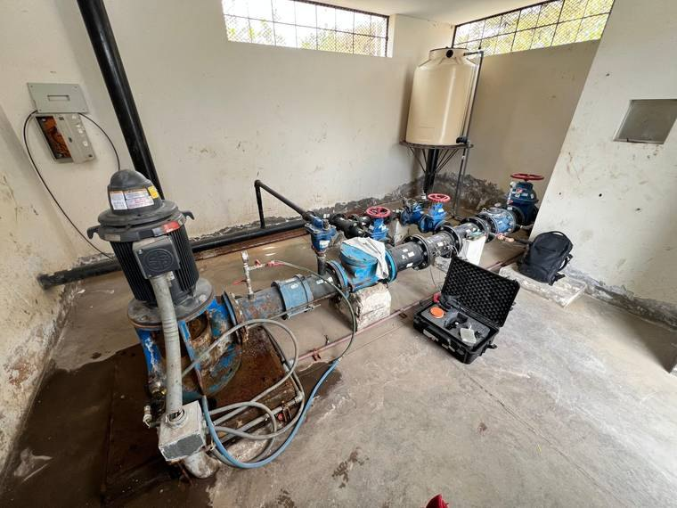

Verifying 53 bulk water meters in the field.
A water utility in Perú needed to know whether the flowmeters at its wells and reservoirs were telling the truth. I checked every station against a portable clamp-on ultrasonic reference, corrected the meters that had drifted right there in the field, and turned the whole campaign into an interactive report.
- Role
- Instrumentation & SCADA Engineer, LabProjects
- Client
- A Peruvian water utility (EPS)
- When
- Two-week field campaign, Sep 2026
- Reference
- Portable clamp-on ultrasonic flowmeter

If the meter drifts, the numbers lie.
Bulk meters are how a utility knows how much water it actually produces. They drift with age, get installed without enough straight pipe, or end up with the wrong settings, and nobody notices until someone checks them against an independent reference.
The goal was to check every meter in one campaign, using each meter’s own declared accuracy as the pass/fail line, and to fix what could be fixed on the spot instead of just writing it down.
Same method at every station.
Repeatable steps, so 41 tests done by hand over two weeks can still be compared with each other.
Survey the station
Record the meter, indicator type and installation. Measure the pipe’s outer perimeter and wall thickness to get its real inner diameter instead of trusting the nominal size.
Mount the reference
Clamp the ultrasonic transducers onto a clean, straight section. They don’t touch the water, so the pipe stays closed and the station keeps running.
Read both at once
Take three simultaneous readings of the meter and the reference. Compute the flow error, the volume error and how much the readings scatter.
Judge it fairly
Compare the error with the band the meter’s own manufacturer promises. Each station gets a clear verdict: within tolerance, needs adjustment, or needs repair.
Correct and re-check
When a meter drifted, apply a correction factor in its converter by software. Then confirm it with three more readings 10 minutes apart.
Document every station
Stations I couldn’t test (no flow during the visit, no access, or no meter signal) were documented with the reason, so the report has no blank rows.
An interactive report instead of a stack of PDFs.
One self-contained HTML file the utility can open anywhere, even offline. The chart below shows its main view with made-up numbers; the real results belong to the client.
- Station map with filters: every station colored by its verdict.
- Error vs. acceptance band for every tested meter, like the chart on the left.
- Sortable table to find the worst offenders fast.
- Per-test detail: pipe geometry, the simultaneous readings, and the check after each correction.
- Photo log of around 200 field photos, linked to each station.
Wells, reservoirs and a lot of blue pipe.
What this project exercised.
This is a public summary. The client’s name, station names and locations, serial numbers, readings and individual results are intentionally left out, and the photos were chosen so they don’t show any of them. Work done as part of the LabProjects team.